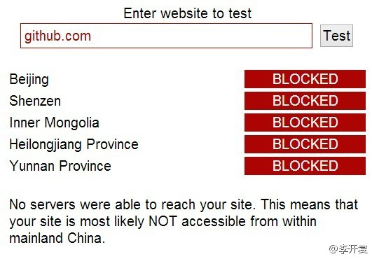

人民都在笼子里，还说什么把权力关笼子里，谁来关？自己关自己？逗你玩儿呢吧！//@罗振宇:这下知道谁将被关到笼子里了吧？@李开复:【强烈抗议封锁GitHub] GitHub是全球最大的社交编程及代码托管网站，近日在国内遭全面屏蔽。在GitHub的300万会员中，中国是第四大国。GitHub是程序员学习和与世界接轨的首选工具。GitHub并无意识形态，也没有反动内容。封锁GitHub毫无道理，只会导致国内程序员和国际脱轨，失去竞争力和前瞻性。转！ 